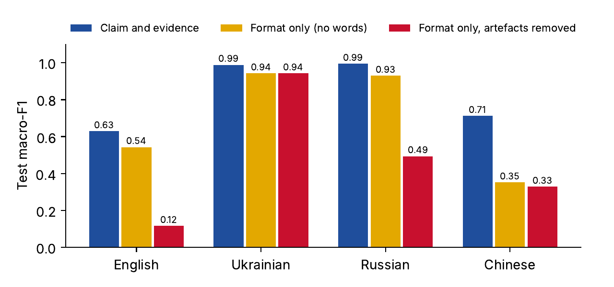

Experiment · Fact-checking · Multilingual NLP · Evaluation
Near-perfect fact-checking scores in Ukrainian and Russian came from the shape of the evidence, not the facts
RU22Fact: when a large language model searches the web and summarises the evidence, what is a verifier actually learning?
By Muzammal Hussain · 20 November 2026 · Research update
Collecting evidence for fact-checking is slow, so newer datasets let a large language model search the web and summarise what it finds. RU22Fact does this for 16,033 claims about the Russia–Ukraine conflict in English, Ukrainian, Russian and Chinese. Models trained on it score close to perfect in two of the four languages. The question here is how much of that comes from reading the evidence, and how much from how the evidence looks.
Key findings
- Format alone does most of the work. On the official test split (3,215 claims), a model of claim and evidence reaches macro-F1 0.679, against 0.268 for always guessing the commonest label. A classifier that sees no words, only six format features, reaches 0.591: 79% of that gain.
- The marks differ by label. In Russian, 95% of Supported but 12% of Refuted evidence contains the search engine's greeting. In Ukrainian, the median Supported evidence is 107 characters long and the median Refuted evidence 2,830.
- Removing the marks and the verdict words changes nothing. After stripping the format marks and deleting every verdict word (false, fake and so on), character n-grams still score 0.989 on Ukrainian and fine-tuned XLM-R 1.000.
- Big multilingual encoders do the same. XLM-R and multilingual-E5 reach 0.997 to 1.000 on Ukrainian and Russian with or without the marks.
- The label is the genre. Refuted claims come with full debunking articles, Supported ones with short news leads. A model can tell these apart without checking the claim at all.
Setup
The code downloads RU22Fact from a pinned commit and checks it, then scores everything on the official test split. The transparent models are character n-gram classifiers on the claim, the evidence, or both. The format probe gets only six numbers per example: whether the search-engine greeting appears, whether the text starts with a [1] citation marker, whether it has list numbering, its length, and two character shares. Two multilingual encoders, XLM-R and multilingual-E5, were fine-tuned with three seeds each on Kaggle GPUs.

Results
| Model | Overall macro-F1 | Ukrainian | Russian |
|---|---|---|---|
| Majority class | 0.268 | – | – |
| Format only, no words | 0.591 | 0.94 | 0.93 |
| Claim and evidence, character n-grams | 0.679 | 0.99 | 0.99 |
| Evidence, character n-grams, marks removed and verdict words masked | 0.684 | 0.989 | 0.976 |
| XLM-R, marks removed and verdict words masked (3 seeds) | 0.683 ± 0.004 | 1.000 | 0.993 |
Masking the verdict words was the test that settled it. If the models had been reading "this is false" in the evidence, their scores would have dropped. They did not, because the kind of document still gives the answer: a long debunking article means Refuted.
What this means
A score of 0.99 on a fact-checking benchmark is only meaningful if the evidence does not already reveal the label. For datasets built with AI-written evidence, we suggest reporting three simple baselines next to the main result: a format-only model, a model with the format marks removed, and a model with the verdict words masked. If those are close to the main score, the benchmark is measuring the evidence's genre, not verification.
Limitations
This is one dataset. The six format features were chosen by inspecting it, and other LLM-built datasets may carry different marks. The results do not say that the models cannot verify claims, only that this benchmark cannot show whether they do in Ukrainian and Russian. English and Chinese, where the shortcut is weaker, remain the harder and more informative part.
Data: Zeng, Ding, Zhao and colleagues (2024), RU22Fact: optimizing evidence for multilingual explainable fact-checking on the Russia–Ukraine conflict, LREC-COLING 2024.